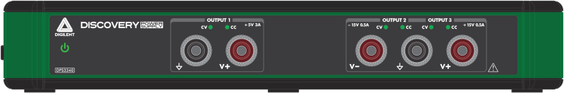
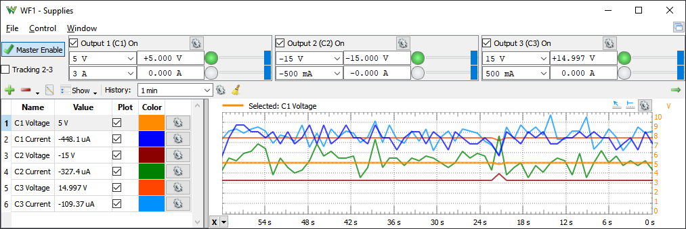
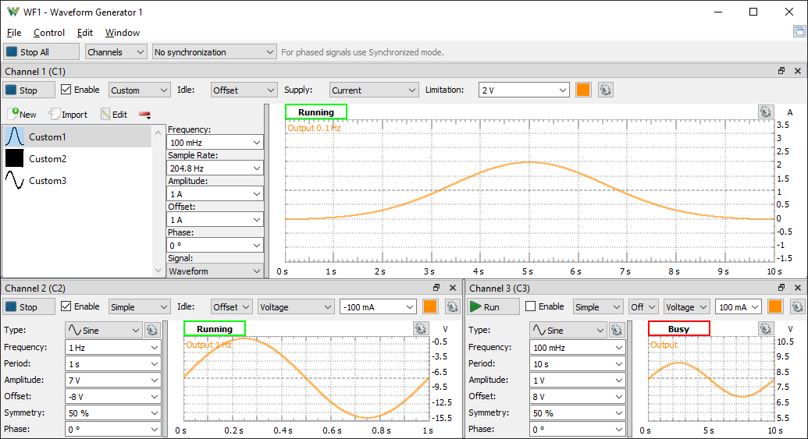

To set up the DPS3340:

See Installer Details for information about different command line options to install WaveForms.
See WaveForms for more information on using the WaveForms software.
The CV or CC LED is lit when the reading is close to the set value and within the specifications, otherwise the CV and CC LEDs blink to indicate error, short to ground or other supply rail.
The same condition is in both the application and the firmware, but the LEDs may light up differently because the Supplies window uses slower average value (default 1Hz) and device updates at 62.5kHz for quick response.
When the device is powered up but not connected to the computer and LEDs are lit.
When the Wavegen is running both CV and CC LEDs are lit for the respective channel.
The DPS3340 has three power supply channels.
| Output 1 | Output 2 | Output 3 | ||||
|---|---|---|---|---|---|---|
| Voltage | Current | Voltage | Current | Voltage | Current | |
| Programming | 1 V to 5 V | 10 mA to 3 A | -1 V to -15 V | -10 mA to -500 mA | 1 V to 15 V | 10 mA to 500 mA |
| Accuracy | 15 mV | 15 mA | 15 mV | 8 mA | 15 mV | 5 mA |
| Resolution | 0.37 mV | 0.2 mA | 1 mV | 0.037 mA | 1 mV | 0.037 mA |
| Load regulation | ±0.06 V/A | ±0.15 V/A | ±0.15 V/A | |||
| Readback | -16 V to +16 V | 0 to 3 A | -16 V to +16 V | 0 to -500 mA | -16 V to +16 V | 0 to 500 mA |
| Accuracy | 30 mV | 10 mA | 20 mV | 5 mA | 20 mV | 5 mA |
| Resolution* | 8-0.5 mV | 0.8-0.05 mA | 8-0.5 mV | 0.15-0.01 mA | 8-0.5 mV | 0.15-0.01 mA |
Note that the supplies are not floating, these have the same ground as the switching supply and connected to the computer through USB cable.
For more information visit the Resource Center.
See the Power Supplies tool.

The outputs can be used as AWG channels to generate current or voltage waveform. Each channel can either be controlled from Wavegen tool or from the Supply tool at a time, in the other tool it will show Busy status.
See the Wavegen tool.

The channel voltage and current readings can be monitored in the oscilloscope interface with up to 1kHz rate. This can work in parallel to the Supply tool control and monitoring.
See the Oscilloscope tool.